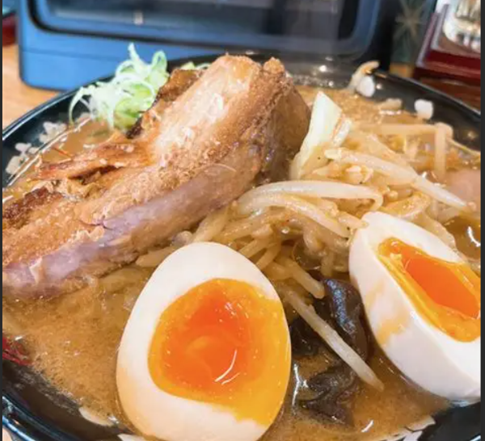
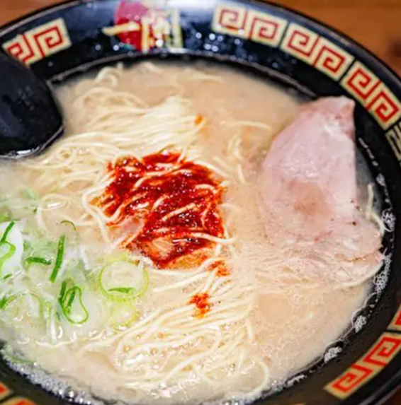
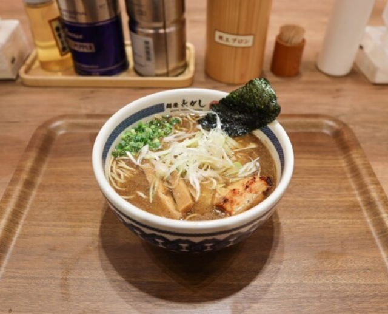
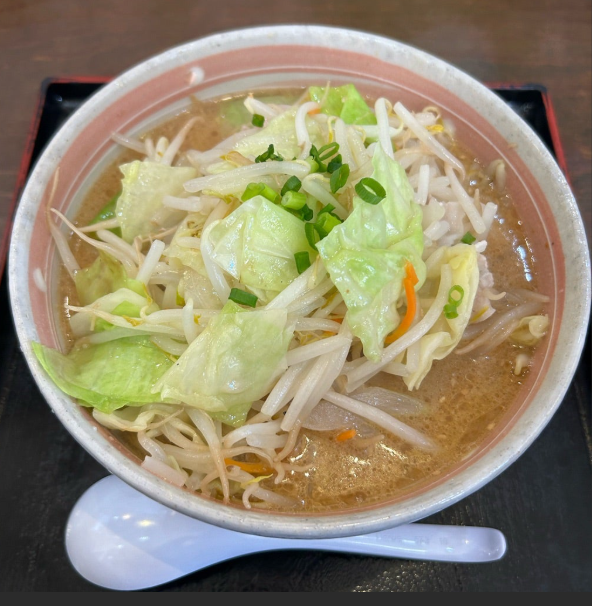

（「ラーメン大好きっこ」）
（世界を救ううまさ）
お気に入りリンク
（https://loco.kufu.jp/sendai/articles/original/1075）
（https://retty.me/theme/101945300/）
（https://www.susurulab.co.jp/sendai/）
（https://tabelog.com/ramen/miyagi/A0401/rank/?msockid=27b54c4da9ac6c951d0d580ba87e6d7e）
ラーメン・フォトギャラリー



外部リンク
（https://tabelog.com/miyagi/A0403/A040304/4020531/?msockid=27b54c4da9ac6c951d0d580ba87e6d7e）
（https://www.bing.com/search?q=仙台ラーメンブログ%E3%80%80えんまる&qs=n&form=QBRE&sp=-1&lq=0&pq=仙台ラーメンブログ%E3%80%80えんまる&sc=12-14&sk=&cvid=F0530939F94F46BF8F05A3018B014E84）
（ラーメンデータベース等）